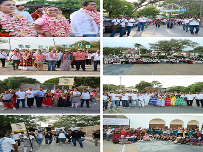
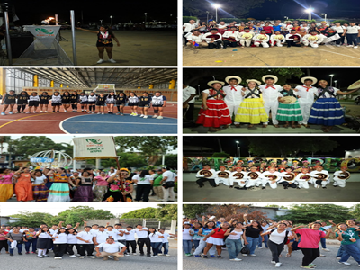
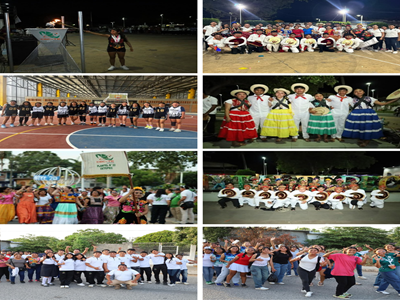

¡La muestra fue llevada a cabo los días 31 de marzo y 1 de abril!
¡La muestra fue llevada a cabo los días 31 de marzo y 1 de abril!
|
Fue un evento anual que reúne a estudiantes de diferentes planteles de la región para que cada uno pueda desarrollar sus talentos y habilidades. |
 |
 


Se realizo un recorrido por la principales calles de la ciudad ixtaltepec
Hubo varios deportes como futbol, basquetbol, voleibol y carreras